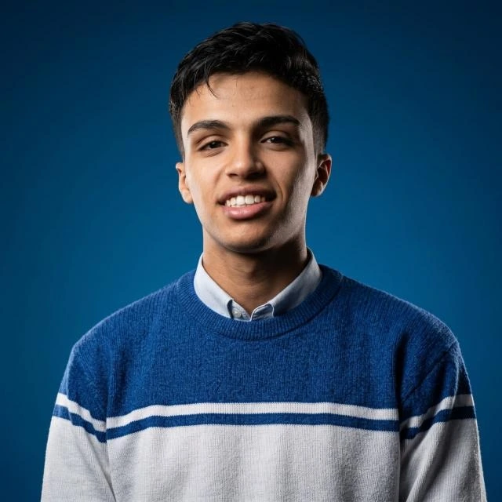

Adobe Illustrator
Vector design & visual identities
Portfolio skill indicator
INDEPENDENT CREATIVE / EGYPT
PORTFOLIO — SELECTED WORKHi, I’m Ahmed Abdelgalil Atwa.
Brand identities. Social stories. Visual character.
I turn brand messages into clear, considered visuals.

02 / CREATIVE TOOLKIT
The tools behind the work.
Vector design & visual identities

Image composition & social visuals
Part of my Adobe toolkit
CREATIVE CAPABILITIES
Brand identity · Logo design · Social media design · AI tools
HOW I WORK
Clear communication · Creative problem-solving · Attention to detail · Teamwork · Time management
03 / EXPERIENCE
Brand identities.
Creative campaigns.
Freelance + Goalmakers
Creative direction for social campaigns, branding and visual content.
Boost+ · Remote
Digital content and social visuals in collaboration with marketing teams.
Freelance + Adlink
Social campaigns, promotional content and marketing visuals.
Freelance
Logos, brand identities and visual identity systems.
04 / SELECTED WORK
Brand identities, social campaigns
and standalone visuals.
BRAND IDENTITIES / 06
Logos and the identities around them.
GRID / CAMPAIGN VISUALS
05 / WHAT I CAN HELP WITH
Logos and visual systems that bring consistency to the way a brand presents itself.
Campaign visuals and branded content that communicate a message across social channels.
06 / LET’S MAKE IT HAPPEN
Have a brand to build or a campaign in mind?
Tell me what you’re working on.
SOCIAL MEDIA / 08 COLLECTIONS
Stories with
stopping power.
Individual designs, brought together by brand and campaign.